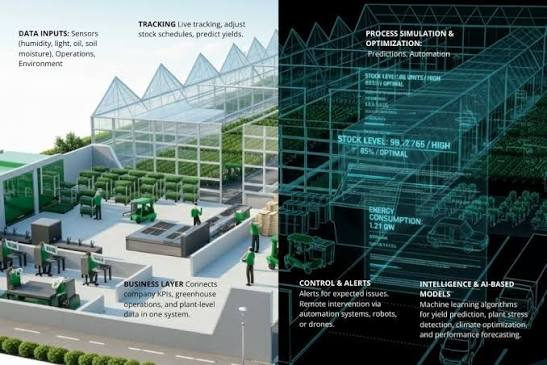

Civil Engineering student at Meru University of Science and Technology with a deep drive for technology and layout design. I combine engineering domains with BIM styling, modern UI/UX workflows, and Machine Learning to build functional digital twins and interactive applications.
Analyzing automated concrete placement, mechanical material pathways, and smart production metrics across modern site installations.
Mapping simulated IoT sensor frameworks to optimize distributed power lines and utility network models over municipal areas.

Aligning real-time monitoring streams with virtual structural geometry models to predict building system wear cycles dynamically.